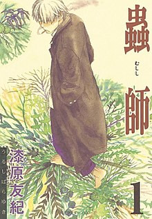
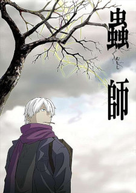
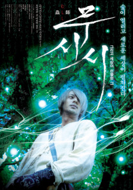
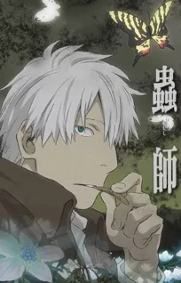
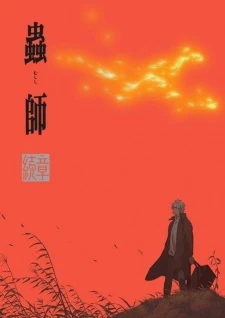
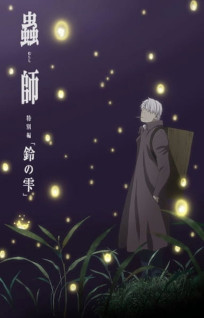

Mushishi (série)
Mushishi (蟲師) ou Mushi-shi é uma série de mangá escrita e ilustrada por Yuki Urushibara, publicada na revista Kodansha's Afternoon de janeiro de 1999 a agosto de 2008. A história gira em torno de criaturas estranhas chamadas mushi (蟲) que podem causar fenômenos estranhos ao mundo. e criaturas ao seu redor. Apenas alguns podem ver o mushi, seja por terem nascido com a habilidade ou por terem sido afetados pelo mushi de alguma forma. Algumas pessoas, chamadas mushi-shi, estudam para aprender mais sobre essas criaturas e sobre a própria vida. Uma dessas pessoas é Ginko, personagem principal da história, que viaja e auxilia pessoas atormentadas por mushi. O mangá tem 10 volumes e cerca de 50 capítulos. O mangá ganhou o Prêmio de Excelência no Japan Media Arts Festival de 2003 e no Kodansha Manga Award de 2006.
O mangá foi adaptado para série de anime em 2005, terminando em 2006 com 26 episódios. A produção Artland foi dirigida por Hiroshi Nagahama.
Uma adaptação para o cinema de ação ao vivo intitulada (em inglês) The Bug Master, dirigida por Katsuhiro Otomo, estreou em 24 de março de 2007.
Um especial, intitulado Mushishi Tokubetsu-hen: Hihamukage, foi lançado em 4 de janeiro de 2014.
A segunda temporada do anime foi ao ar no dia 4 de abril de 2014, encerrando com a segunda metade no dia 21 de dezembro de 2014, totalizando 20 episódios.


Um segundo especial, intitulado Mushishi Tokubetsu-hen: Odoro no Michi, foi lançado em 20 de agosto.
Um filme, intitulado Mushishi Zoku Shou: Suzu no Shizuku, foi lançado em 16 de maio de 2015.
